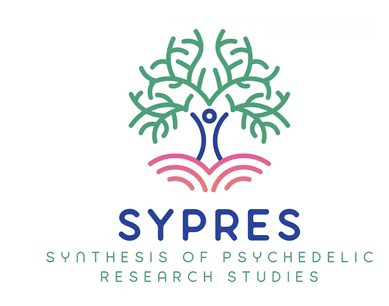

Projects
Current Projects
Penn LEAD: Penn Longitudinal Executive functioning in Adolescent Development
In order to promote transdiagnostic research on executive function during development, the Penn Longitudinal Executive functioning in Adolescent Development study (Penn LEAD; N = 132) combines longitudinal multi-modal imaging data with rich clinical and cognitive phenotyping.

SYPRES: Synthesis of Psychedelic Research Studies
Synthesis of Psychedelic Research Studies (SYPRES) is an open-data living systematic review and meta-analytic resource that synthesizes evidence from randomized controlled trials of psychedelic-assisted therapies. SYPRES currently includes databases for psilocybin for depression (N = 801 across 15 studies) and MDMA for PTSD (N = 286 across 6 studies), with additional reviews on-going.